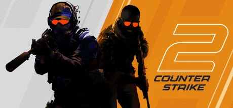

CS:GO 的全面升级版，基于 Source 2 引擎重建，F2P 竞技 FPS 标杆。


想象一个没有剧情、没有主角、没有反派、没有 NPC的 FPS——反恐精英 2就是。25 年来这游戏的世界观就是一句话：5 对 5、反恐精英对恐怖分子、回合制拆弹守点。地图是全球各地真实场景模板化的几张图——Dust2 的中东沙漠、Inferno 的意大利小镇、Mirage 的摩洛哥集市。你站进的不是一个虚构世界，是一个把现实场景剪成了几个矩形拆弹区的纯竞技场。
你不需要扮演任何具体的人——你只是 5 个人里的一个。前半场你是反恐精英（CT，深蓝战术装），后半场你是恐怖分子（T，卡其便装+迷彩）。每一回合 1 分 55 秒：T 方把 C4 炸弹运到 A 点或 B 点装上、CT 方阻止或者拆掉。胜利条件没有戏剧性——30 回合先到 16 胜的赢。可你身边的队友会在最后一颗子弹打飞的时候在语音里骂出最近三个月的所有粗话。
替你扛过中路的那个队友，下一回合可能因为你买枪买错了开始喷你；你刚扔出去的那个烟雾弹，下一秒被对面火光弹炸穿，里面那个站定开枪的狙击手就是你；你那把卖了三个月生活费买的 AWP 龙狙皮肤，被你 0 杀这一局后挂在地上五秒被对面捡走了。这不是一个关于胜利的故事，是一个关于「为什么我打了 1000 小时还在打 Dust2」的故事——准星已经举起来了，再来一把？
纯竞技场 × 25 年视觉哲学，是 Valve 用 25 年沉淀出的「写实军事 + 信息效率至上」的极简竞技美学。底色是熟悉的当代军事射击——制式装备、CQB 巷战、全球真实场景模板化；变异在于把所有非竞技元素全部砍掉——没有过场、没有角色叙事、没有装饰性 UI、连色彩都被压到只够区分两阵营。色彩锁定CT 蓝 vs T 黄双色阵营对抗。Source 2 引擎的体积化烟雾是 25 年来唯一的大胆视觉革新。整体调性介于极简平面设计和战争纪录片之间。
纯竞技 FPS 美学要从1999 年 Minh Le 和 Jess Cliffe 的《半条命》模组《Counter-Strike》算起——它建立了「5v5 回合制 + 真实武器 + 战术拆弹」的玩法和视觉骨架。2003 年 1.6定型了 CS 的电竞地位；2012 年《CS:GO》在 Source 引擎上重做这套美学，引入皮肤经济，让纯竞技游戏第一次拥有了惊人的商业模式。同时期参照系包括《彩虹六号：围攻》（2015）的硬核 CQB、《Valorant》（2020）的角色技能化竞技美学——后者让 CS 第一次面临真正的竞争对手。2023 年 Valve 发布 CS2 替换 CS:GO——这是 Valve 罕见的「换引擎不换游戏」决策，证明了 CS 的视觉哲学 25 年来其实没变过：「把所有不影响竞技公平的元素全部删掉」。
基于体验清单 · 审美偏好 · IP故事三维度综合选出